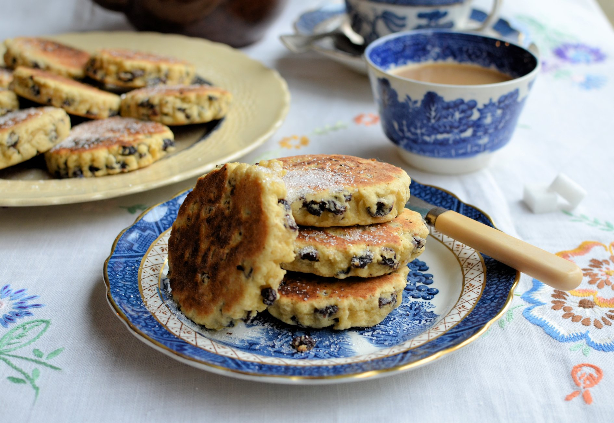

Welsh cakes

Description
Welsh cakes originate from the country of Wales in
Great Britain. The cakes are a cross between a cookie, a scone, and a
pancake but they are truly unlike any of these things when it comes to
taste and texture. They are the size of chubby cookie, made from ingredients
similar to a scone, but they are cooked like a pancake on a griddle,
they are not baked. Sweet but not overly so, Welsh Cakes are an example
of a unique and traditional food that reflects the resourceful, wholesome,
and practical nature of the Welsh people. Made from simple pantry items
like flour, sugar, milk and butter, Welsh Cakes are considered a special
treat since they take a great deal of time and effort to make.
Ingredients
- 8oz / 220g self raising flour
- 2oz / 55g caster sugar
- 4oz / 110g margarine or butter
- 1 or 2 handfuls of sultanas
- 1 or 2 free-range eggs depending on mixture
Steps
- Sieve flour into bowl, then add margarine or butter, rub in finely together.
- dd sugar and sultanas and mix.
- Add 1 egg and mix. The consistency needs to be bound together, so if too dry add another egg.
- Roll out on a floured board, to about a quarter inch thick.
- Cut using a 2 inch (5cm approx) cutter, then cook on a greased pan, or bake stone, on a medium heat for about 4 to 5 minutes each side.
- The exact cooking length will depend on what you are cooking your Welsh cakes on, but keep a close eye - too short a period and they won’t be cooked in middle, and cooked for too long and they will be dry. When touched during cooking they should feel springy, but not wet to the touch (no mixture should come out of the middle).
- Once cooked dust with caster sugar and enjoy.